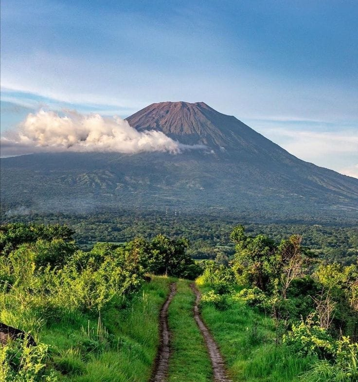
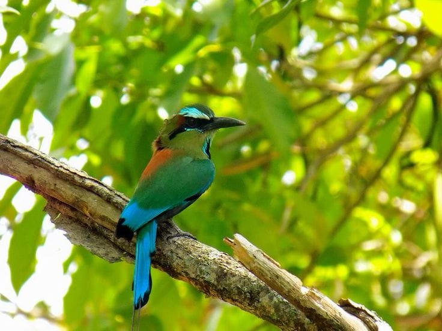
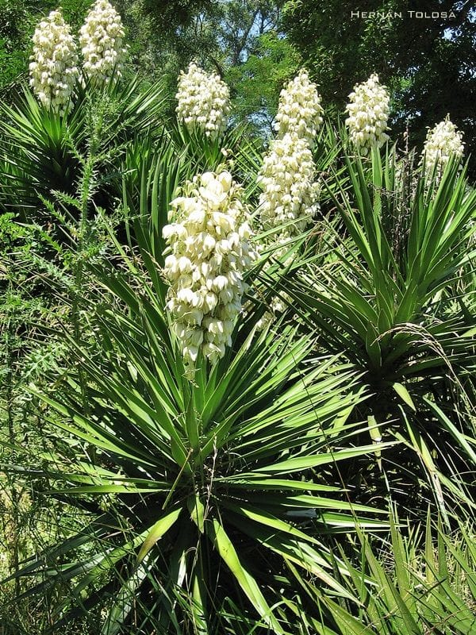
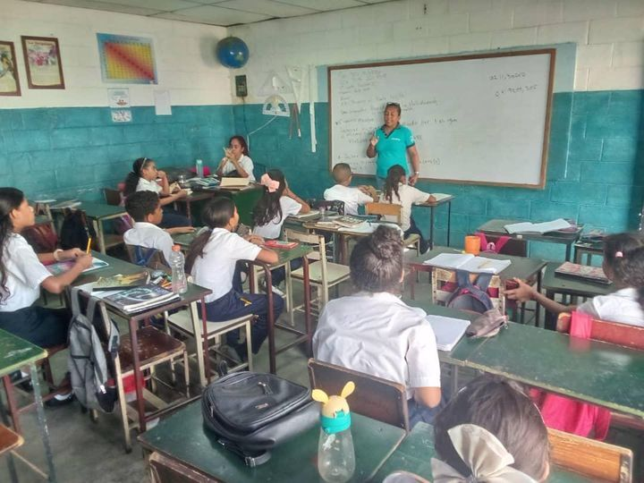

Volcán y paisaje de Izalco
Tierras Nacionales
Un impresionante volcán activo y símbolo natural de nuestra variada topografía volcánica.


Un vistazo a nuestra identidad nacional, nuestros símbolos y los datos fundamentales.

Tierras Nacionales
Un impresionante volcán activo y símbolo natural de nuestra variada topografía volcánica.

Símbolo de fauna
El Torogoz, conocido por su cola en forma de raqueta y su hermoso plumaje.

Símbolo floral
La flor de izote, representa la pureza y la resiliencia del carácter nacional.

Aprendizaje moderno
Invertir en la reforma curricular, en instalaciones modernas y en alfabetización digital para empoderar a las futuras generaciones.